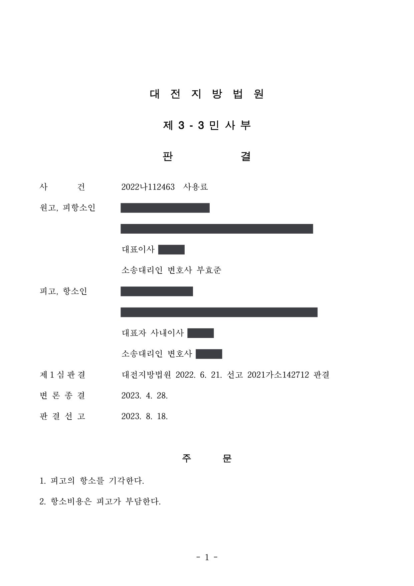

공유오피스 서비스이용계약 사용료·위약벌 청구소송 (1·2심)
대전지방법원 2021가소142712 · 2022나112463 · 공유오피스 운영사 대리 · 담당변호사 부효준
판결문


사건의 요지
공유오피스 서비스이용계약이 중도 해지된 뒤 미납 사용료와 위약벌의 지급을 구한 사건으로, 위약벌 조항이 약관으로서 공정성을 잃었는지가 쟁점이었습니다.
사건의 주요 내용
원고는 소규모 사업자에게 사무실 공간과 사무기기 등을 임대하는 공유오피스 운영 회사입니다. 원고는 2020년 1월 피고 회사와 맞춤형 사무실 3개 호실에 관하여 예치금 2,750만 원, 월 사용료 808만 5천 원, 이용기간 2020년 2월부터 2022년 2월까지로 하는 서비스이용계약을 맺었고, 2021년 1월에는 2개 호실로 줄여 예치금 2,266만 원, 월 사용료 676만 5천 원, 이용기간 2021년 2월부터 2022년 2월까지로 변경하는 계약을 새로 체결하였습니다. 월 사용료는 1년 이상의 이용기간을 전제로 기존 요금에서 40%를 할인한 금액이었습니다.
이용약정에는 회원이 자기 사정으로 계약을 조기 종료하는 경우 1개월 전에 통지하여야 하고 잔여 이용요금의 총액을 위약벌로 지급하되 그 금액이 예치금을 넘으면 예치금을 한도로 한다는 조항(제11조 제1항 b호)과, 손해배상책임은 별도로 남는다는 조항(제8조, 제11조 제3항)이 있었습니다. 피고는 2021년 4월 말 계약 해지를 통지하여 계약은 2021년 5월 27일 종료되었고, 미지급 월 사용료·주차이용료·회의실이용료·원상복구비 등은 합계 20,654,097원이었습니다.
원고는 예치금이 위약벌로 원고에게 귀속되었음을 전제로 미납 사용료 등 20,654,097원과 지연손해금의 지급을 구하는 지급명령을 신청하였고, 피고의 이의로 소액사건 소송으로 이어졌습니다. 제1심이 원고의 청구를 전부 받아들이자 피고가 항소하였습니다. 부효준 변호사는 1·2심에서 원고 회사를 대리하였습니다.
피고의 주장
- 이용약정은 약관에 해당하고 위약벌 조항(제11조 제1항 b호)은 약관법에 따라 무효이므로, 예치금을 위약벌로 귀속시킨 것도 무효이며 원고가 청구하는 금액은 예치금에서 충당하면 되므로 청구가 기각되어야 한다고 주장하였습니다.
- 위약벌 조항은 회원이 계약을 해지하려 할 때 상당히 큰 금액을 부담하게 하여 민법 제636조·제635조에 따라 고객에게 부여된 계약해지권을 과도하게 제한하므로 약관법 제9조 제1호에 의하여 무효라고 주장하였습니다.
- 예치금은 임대차보증금의 성격을 가지는데, 계약기간이 4개월 이상 남은 상태에서 해지하면 3개월분 임대료 상당의 예치금을 위약벌로 잃는 데다 1개월 전 통지의무로 1개월치 임대료를 더 부담하게 되고, 원고의 공유오피스는 공실이 거의 없어 조기 종료로 입는 손해가 거의 없으므로, 예치금 전액을 위약벌로 귀속시키는 조항은 신의성실의 원칙에 반하여 공정을 잃고 고객에게 부당하게 불리하며 과중한 손해배상의무를 부담시키는 것으로서 약관법 제6조 제1항·제2항 제1호, 제8조에 따라 무효라고 주장하였습니다.
부효준 변호사의 주장
- 이용약정 제8조와 제11조 제3항이 손해배상책임을 따로 정하고 있으므로 제11조 제1항 b호는 문언 그대로 손해배상의 예정이 아닌 위약벌 조항이고, 따라서 손해배상예정액 조항의 무효를 정한 약관법 제8조는 적용될 수 없다고 반박하였습니다.
- 제11조는 고객에게 임의해지권을 주는 대신 1개월 전 통지의무와 예치금(3개월분 요금) 한도의 위약벌을 결합하여 정한 것이고, 민법 제636조는 약정 해지권의 통고 시기와 효력 발생 시기를 보충하는 규정일 뿐이므로 약관법 제9조 제1호가 말하는 '법률에 따른 고객의 해지권'을 제한한 것이 아니라고 주장하였습니다.
- 위약벌은 예치금을 한도로 하여 3개월분 사용료 상당에 그치고, 피고는 1년 이상의 이용을 전제로 40% 할인된 요금을 적용받았으므로, 피고 주장대로라면 할인 혜택을 받은 채 아무 부담 없이 1개월 뒤 계약에서 벗어날 수 있게 되어 오히려 공평에 어긋나며, 제11조가 없었다면 피고는 약정 만료일까지 약 9개월분 사용료를 부담할 위험이 있었다는 점을 들어 조항이 고객에게 부당하게 불리하지 않다고 주장하였습니다.
법원의 판단
제1심은 피고가 내세우는 사정이나 증거만으로는 서비스이용계약 제11조 제1항 b호의 위약벌 조항이 신의성실의 원칙을 위반하여 공정을 잃었다거나 피고에게 부당하게 불리하다고 단정하기 어렵다고 하여 원고의 청구를 전부 받아들였고, 피고에게 20,654,097원과 지급명령 정본 송달 다음날인 2021년 6월 10일부터 연 12%의 지연손해금을 지급하라고 명하였습니다.
항소심은 먼저 이용약정이 원고가 다수의 상대방과 계약하기 위하여 미리 마련한 것으로 약관법의 적용 대상인 약관에 해당한다고 보았습니다. 그러나 제8조·제11조 제3항에서 손해배상을 별도로 정하고 있는 점에 비추어 위약벌 조항은 문언대로 위약벌 규정이므로 손해배상예정액에 관한 약관법 제8조는 적용될 수 없고, 민법 제636조는 임차인의 약정 해지권에 관한 해지통고 가능시기와 효력 발생 시기를 보충하는 규정이어서 약관법 제9조 제1호의 '법률에 따른 고객의 해지권'에 해당하지 않는다고 판단하였습니다.
약관법 제6조에 관하여는 대법원 2023. 3. 30. 선고 2018다207076 판결의 법리를 전제로, 위약벌이 예치금(3개월분 사용료)을 한도로 하여 과다하지 않은 점, 피고가 1년 이상 이용을 전제로 40% 할인을 받은 점, 피고 주장대로라면 할인을 받은 채 추가 부담 없이 1개월 뒤 계약에서 벗어나는 반면 원고는 새 계약 체결 때까지 손해를 감수해야 하여 오히려 공평에 반하는 점, 제11조가 없었다면 피고가 2022년 2월 말까지 약 9개월분 사용료를 부담할 위험이 있었던 점을 들어 고객에게 부당하게 불리한 조항이 아니라고 보았습니다.
그 결과 항소심은 예치금이 위약벌로 원고에게 귀속되었다고 보아 피고의 항소를 기각하였고, 피고는 미납 사용료 등 20,654,097원과 2021년 6월 10일부터 다 갚는 날까지 소송촉진 등에 관한 특례법에 따른 연 12%의 지연손해금을 지급하게 되었습니다. 항소비용은 피고가 부담하였습니다.
이 사건 조항을 포함하고 있는 이 사건 이용약정 제11조는, 고객에게 계약을 임의로 해지할 수 있게 하되, 1개월 전 통지의무를 고객에게 부여하고, 임의 해지의 대가로 잔여 기간에 대한 이용요금 상당 금액을 예치금액, 즉 3개월치 이용요금을 한도로 정하여 위약벌 방식으로 부담하도록 규정하고 있다. 즉, 이 사건 이용약정 제11조는 고객에게 계약의 임의 해지 권한을 위약벌 상당 금액의 부담과 불가분적으로 결합하여 부여하는 약정이다.
한편, 민법 제636조는 임대차기간 약정이 있는 경우에도 당사자 일방 또는 쌍방이 그 기간 내에 해지할 권리를 보류한 때에는 민법 제635조를 준용하여 언제든지 계약해지 통고를 할 수 있고, 임차인이 해지를 통고한 때로부터 1월이 경과하면 해지 효력이 생긴다고 규정하고 있다. 즉, 민법 제636조는 임차인의 약정 해지권에 관한 해지통고 가능시기, 해지의 효력 발생 시기를 보충하는 규정으로 보이는바, 약관법 제9조 제1호가 정한 '법률에 따른 고객의 해지권'에 해당하는 규정으로 보기 어렵다.
대전지방법원 2022나112463 판결 이유 '3. 나. 판단 — 2) 이 사건 조항이 약관법 제9조 제1호에 의하여 무효인지 여부'
약관의 규제에 관한 법률 제6조 제1항, 제2항 제1호가 적용되기 위해서는 문제 되는 약관 조항이 고객에게 다소 불이익하다는 점만으로는 부족하고, 약관 작성자가 거래상의 지위를 남용하여 계약 상대방의 정당한 이익과 합리적인 기대에 반하여 형평에 어긋나는 약관 조항을 작성·사용함으로써 건전한 거래질서를 훼손하는 등 고객에게 부당하게 불이익을 주었다는 점이 인정되어야 한다. 그리고 이때 약관 조항의 무효 사유에 해당하는 '고객에게 부당하게 불리한 조항'인지는 그 조항에 따라 고객에게 생길 수 있는 불이익의 내용과 불이익 발생의 개연성, 당사자들 사이의 거래 과정에 미치는 영향, 관계 법령의 규정 등 모든 사정을 종합하여 판단하여야 한다(대법원 2023. 3. 30. 선고 2018다207076 판결 등 참조).
대전지방법원 2022나112463 판결 이유 '3. 나. 판단 — 3) 이 사건 조항이 약관법 제6조 제1항·제2항 1호에 의하여 무효인지 여부'
이 사건으로 돌아와 보건대, 이 사건 조항은 피고가 계약을 해지한 경우 원고에게 잔여 계약 기간 동안의 사용료에 상당하는 돈을 위약벌 형식으로 부담하도록 하되, 그 금액이 예치금을 초과하더라도 예치금액만을 한도로 하는 점, 이 사건 예치금은 3개월분의 사용료 상당액으로 그 액수가 과다하다고 보기 어려운 점, 피고는 1년 이상의 이용기간을 전제로 하여 기존 사용료에서 40%를 할인한 금액으로 이 사건 계약을 체결한 점, 피고의 주장대로라면 피고는 약정 기간을 1년 이상을 정하여 할인혜택을 받은 채로 아무런 추가 부담 없이 언제든지 해지 통고함으로써 1개월 후에는 계약의 구속에서 벗어날 수 있는 반면, 원고로서는 피고에 의한 임의 계약 해지 후 새로운 계약 상대방과 계약이 체결될 때까지 기한의 정함 없이 손해를 계속 감수해야 하므로 오히려 공평에 반하는 면이 생기는 점, 만일 이 사건 계약에 이 사건 조항을 비롯한 제11조 규정이 아예 없어서 피고의 임의 해지가 불가능했다면 피고는 조기종료일인 2021. 5. 27.부터 원래 약정한 기간만료일인 2022. 2. 28.까지 이 사건 계약에 계속 구속되어 약 9개월분의 사용료지급의무를 부담할 위험성 발생의 개연성이 있는 점 등을 고려하면, 이 사건 조항이 약관법 제6조 제1항, 제2항 제1호에 해당하는 약관 조항이라 보기 어렵다.
대전지방법원 2022나112463 판결 이유 '3. 나. 판단 — 3) 이 사건 조항이 약관법 제6조 제1항·제2항 1호에 의하여 무효인지 여부'
※ 판결 이유 가운데 이 사건의 판단 기준이 된 부분을 그대로 옮긴 것으로, 당사자 이름 등은 가렸습니다.
이 사건이 보여 주는 것
공유오피스 서비스이용계약처럼 운영사가 다수의 회원과 같은 양식으로 맺는 계약은 약관법의 적용을 받으므로, 회원이 중도 해지하면서 위약벌 조항의 무효를 다투는 일이 흔합니다. 이 판결은 손해배상책임을 별도로 정해 둔 계약에서 '위약벌'이라고 표현된 조항은 손해배상의 예정이 아니어서 약관법 제8조의 적용 대상이 아니고, 임의해지권을 위약벌 부담과 결합하여 부여한 조항은 법률상 해지권을 제한한 것(약관법 제9조 제1호)이 아니라는 점을 분명히 하였습니다.
약관법 제6조의 '부당하게 불리한 조항'인지는 위약벌의 상한(예치금 한도), 장기 이용을 전제로 한 할인 혜택, 조항이 없었을 때 고객이 부담했을 위험 등을 함께 저울질하여 판단됩니다. 운영사로서는 위약벌 조항을 손해배상 조항과 구분하여 두고 위약벌에 합리적인 상한을 두는 것이, 회원으로서는 해지 전에 잔여기간과 할인 조건을 확인하는 것이 분쟁을 줄이는 길입니다.
비슷한 처분을 받으셨다면
행정처분은 처분이 있음을 안 날부터 90일 이내에 행정심판이나 취소소송으로 다투어야 하고, 기간이 지나면 돌이킬 수 없는 처분은 집행정지를 서둘러야 합니다. 처분서를 받은 날짜부터 확인해 드립니다.